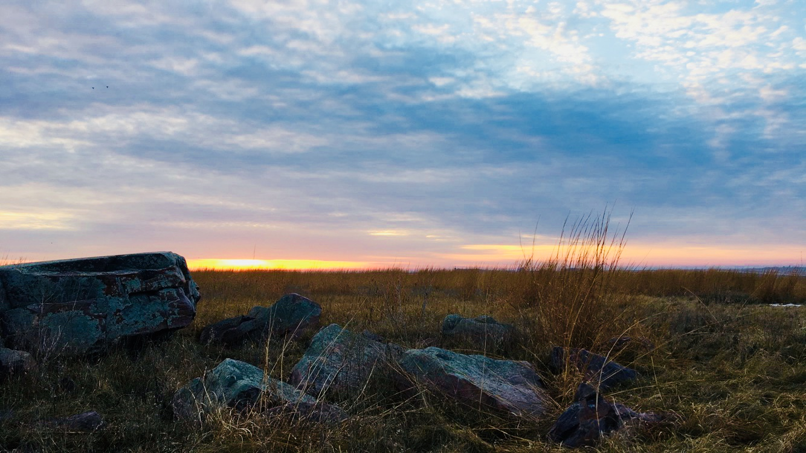
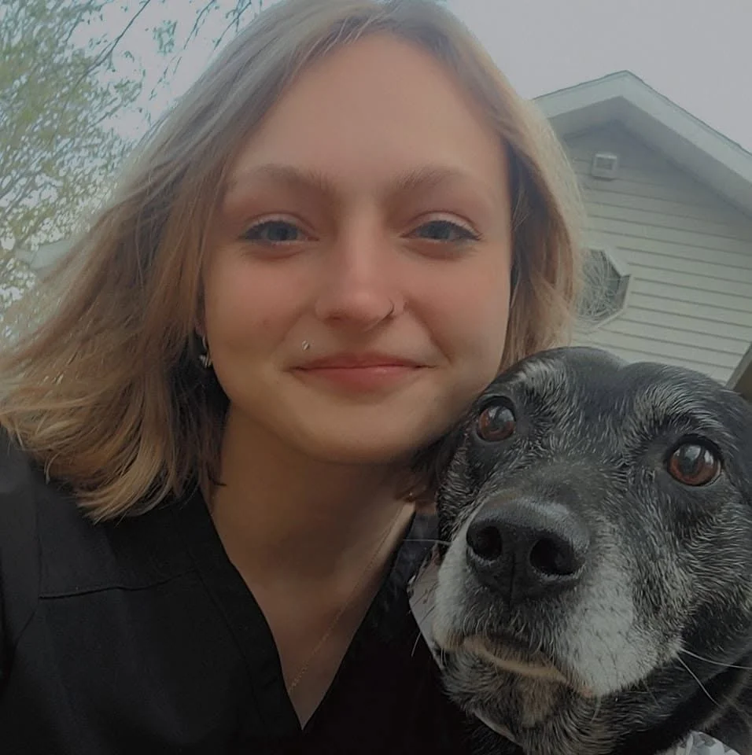

01
Rehabilitation
Intake, stabilization, and supportive care for injured, orphaned, and displaced bats, with the goal of releasing healthy animals back to the wild.

Helping injured, orphaned, and displaced bats while promoting conservation and public understanding across Iowa.
Bats are vital, gentle animals, but like any wild mammal they can carry disease. A few careful steps protect both the bat and your household until help arrives.
Please remember that most rehabbers also work other full-time jobs — wildlife rehab is volunteer-based and done in our free time, so a little patience is appreciated.
About Iowa Bat Center
Iowa Bat Center is led by a licensed wildlife rehabilitation apprentice with years of hands-on bat rehabilitation experience, working to give injured, orphaned, and displaced bats a second chance.
Bats are among Iowa's most beneficial — and most misunderstood — animals. A single bat can eat thousands of insects in a night, supporting farms, gardens, and healthy ecosystems. Our purpose is to care for individual bats and to help people across Iowa understand and coexist with them.

A licensed wildlife rehabilitation apprentice with years of bat rehabilitation experience.
Our Work
Intake, stabilization, and supportive care for injured, orphaned, and displaced bats, with the goal of releasing healthy animals back to the wild.
Supporting native Iowa bat species and their habitats, and raising awareness of threats like habitat loss and White-Nose Syndrome.
Clear, science-based information for the public, students, and landowners — covering bat biology, safe exclusions, and coexistence.
Guidance for homeowners, animal control officers, and conservation partners who encounter bats and want to do right by them.
Iowa Bats
Iowa is home to several native bat species, each playing a role in keeping insect populations in check. Tap any card for quick facts and conservation status.
Resources
What to do — and what not to do — when you find a bat indoors or grounded.
Read steps →The humane, lasting fix is a properly timed exclusion that lets bats out but not back in — never sealing them inside or evicting them during pup season.
A cold-loving fungal disease that wakes hibernating bats too often, burning the fat they need to survive winter. It has killed millions across North America.
Bats aren't blind, rarely carry rabies, and won't fly into your hair. They're shy, beneficial neighbors — just never handle one bare-handed.
Quick answers to the questions we hear most from Iowans about bats.
View FAQ →By the Numbers
Numbers updated as of June 2026.
Future Vision
Growing intake capacity and care facilities so more bats across Iowa can be helped each year.
Supporting habitat protection, roost monitoring, and research partnerships that benefit native species.
Bringing accurate bat science to schools, libraries, landowners, and events throughout the state.
Building pathways for trained volunteers to support rehabilitation, outreach, and conservation work.
Pursuing official nonprofit designation so the center can accept tax-deductible donations and expand the resources available for bat care.
Contact
Tell us what you're seeing and we'll guide you through the next steps. For an injured or grounded bat, please reach out as soon as you safely can.